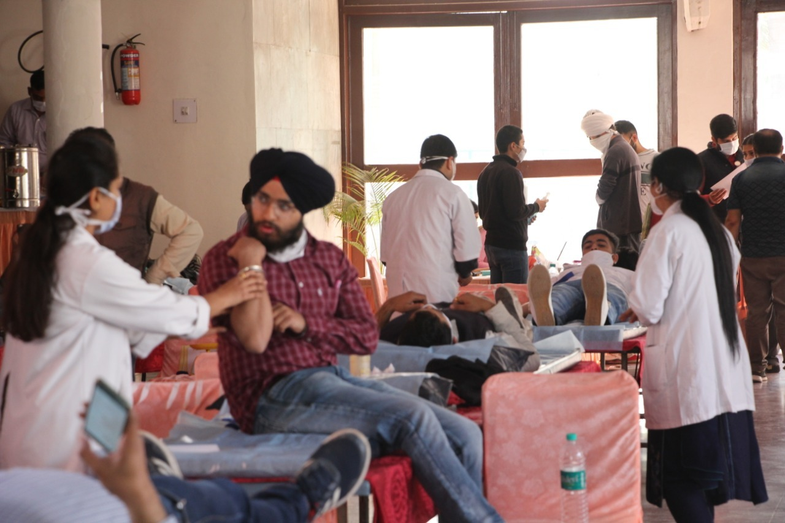

Blood Donation Camp is a biannual event organised by the NSS unit of PEC in collaboration with the Department of Transfusion, PGIMER (Post Graduate Institute of Medical Education and Research). Last year it was organised on 31 October 2019 wherein 250+ donors donated blood, on 28 April 2020 wherein 30 units of blood is collected and on 4 march 2021 wherein 158 units of blood is collected. Doctors from the PGI coordinate and collect blood from the donors. A star donor ceremony is also conducted wherein donors having donated blood more than 4 times are felicitated and given a small token of appreciation. The essence of donating blood that it can save lives of about 3 human beings certainly elates the conscience of the donors.